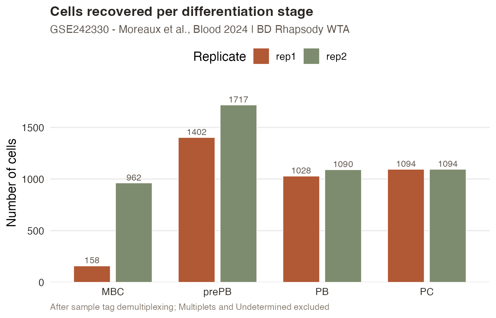
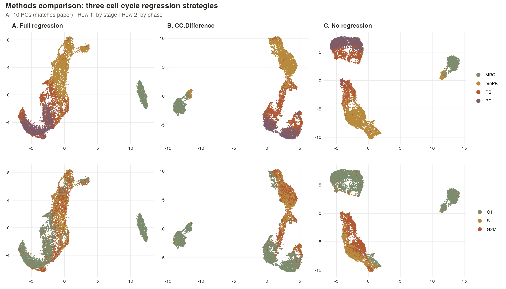
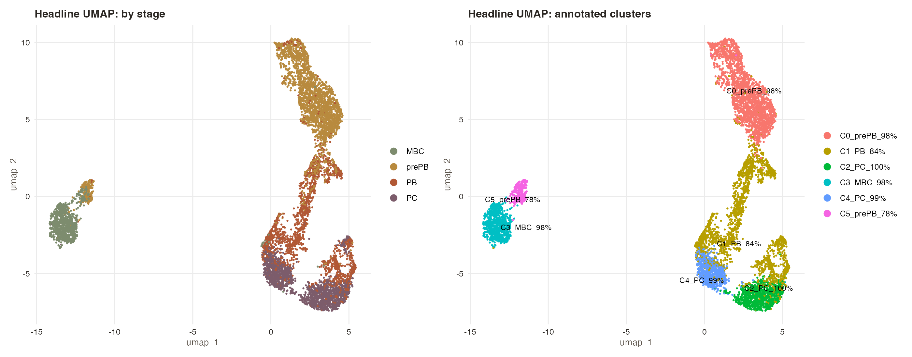
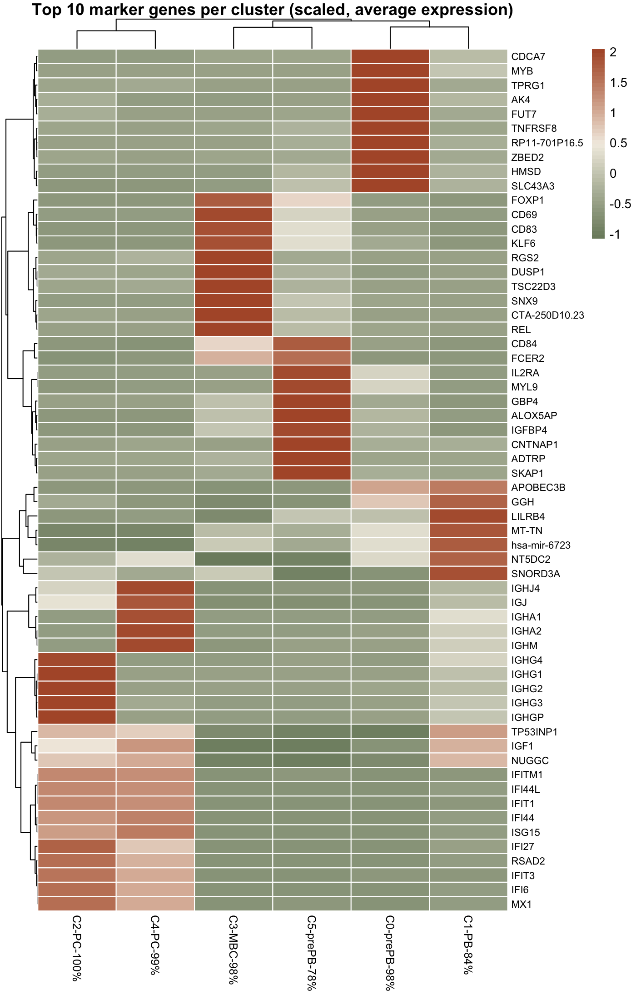
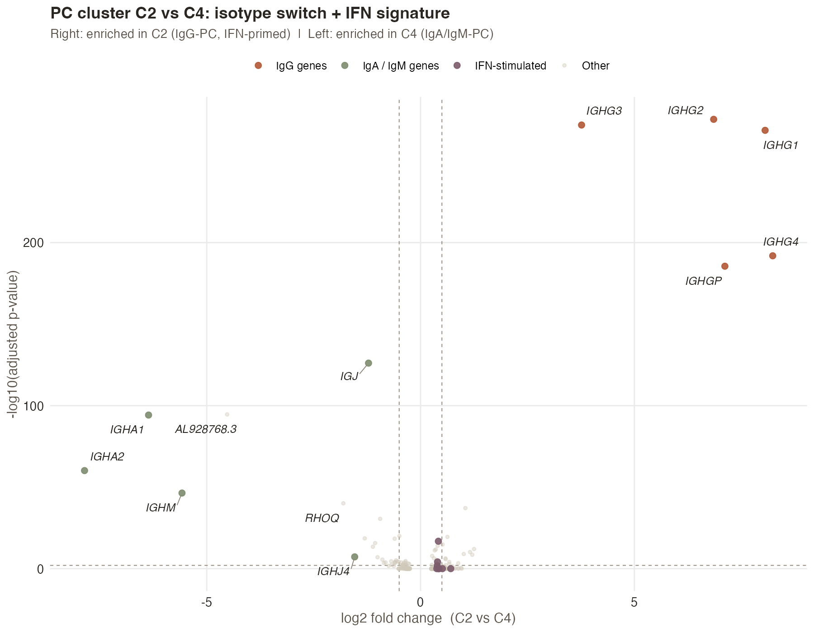

An end-to-end re-analysis of human plasma cell differentiation from BD Rhapsody single-cell RNA-seq, integrating sample tag demultiplexing, stage-aware quality control, a methodological comparison of cell cycle regression strategies, and biological characterization of plasma cell sub-populations. Built on the publicly available dataset from Moreaux et al. (Blood, 2024).
The question
Plasma cells are the body's antibody factories — terminally differentiated B cells that survive for decades in bone marrow niches and continuously secrete immunoglobulin. The path from memory B cell (MBC) to mature plasma cell (PC) passes through two proliferative intermediates: preplasmablasts (prePB) and plasmablasts (PB).
Moreaux et al. generated a four-stage in vitro differentiation system and profiled it with BD Rhapsody single-cell RNA-seq. This case study re-analyzes their public data with an emphasis on the methodological choices that shape what we see — particularly around cell cycle confounding, which is unusually strong in this dataset because prePB and PB are heavily proliferating populations.
The data
Two biological replicates were sequenced with BD Rhapsody using the Single-Cell Multiplex Kit. Four sample tags per replicate (eight in total) labeled cells from each differentiation stage. After QC, 7,920 cells were retained for downstream analysis (92.7% retention).

Sample tag demultiplexing. BD Rhapsody multiplexes multiple samples into one library using oligo barcodes. The per-cell mapping (Cell_Index → Sample_Tag → Sample_Name) was joined onto the gene count matrix to assign each cell to its differentiation stage. Multiplets and Undetermined cells (~2-3%) were filtered out.
The approach
Plasma cells have radically different transcriptional profiles than memory B cells: median UMI counts vary by 10× across stages, mitochondrial content varies by 4×, and naturally high %mt in plasmablasts (reflecting their metabolic demand) would be misclassified as poor quality under standard thresholds. Stage-aware percentile thresholds (95th percentile within each stage for %mt, 1st/99th for nFeature and nCount) preserve biological variation while removing technical outliers.
With UMI counts ranging from ~4,000 in MBC to ~50,000 in prePB, the shared mean-variance assumption underlying SCTransform's GLM doesn't hold across this dynamic range. LogNormalize treats each cell independently and is more honest about the heterogeneity.
Ig constant and variable region genes are so dominantly expressed in PB and PC that they drive clustering by antibody class rather than by regulatory state. They're retained in the data — just not used to find the variable features that define cell identity.
With over 80% of preplasmablasts in S or G2/M phase, cell cycle is not a nuisance variable — it's part of the biology. To make this choice explicit, three regression strategies were compared on the same data:

The results


Unbiased clustering recovered two PC-dominated sub-populations that the original publication did not separately characterize. Direct comparison between them reveals a textbook immunoglobulin class switch:

The MBC → prePB → PB → PC differentiation axis emerges as the dominant structure in the integrated UMAP, with cluster purity ≥78% against the experimental labels.
Immunoglobulin content rises monotonically across the assigned stages (MBC 0% → PC 1.3% median %Ig), confirming the demultiplexing was correct at the cell level.
The two PC sub-clusters separate by isotype (IgG vs IgA/IgM) — a classical immunological feature recovered de novo from unsupervised clustering.
Three cell cycle regression strategies produce three meaningfully different views of the same data. The case study documents each choice and shows the consequences.
The code
The complete analysis lives in a public GitHub repository. Every figure on this page can be regenerated from the public data by running the scripts in order. Each script is self-contained, parameterized, and documented with methods notes explaining the choices made.
What this demonstrates
Have a dataset you'd like analyzed with this level of care? Get in touch.